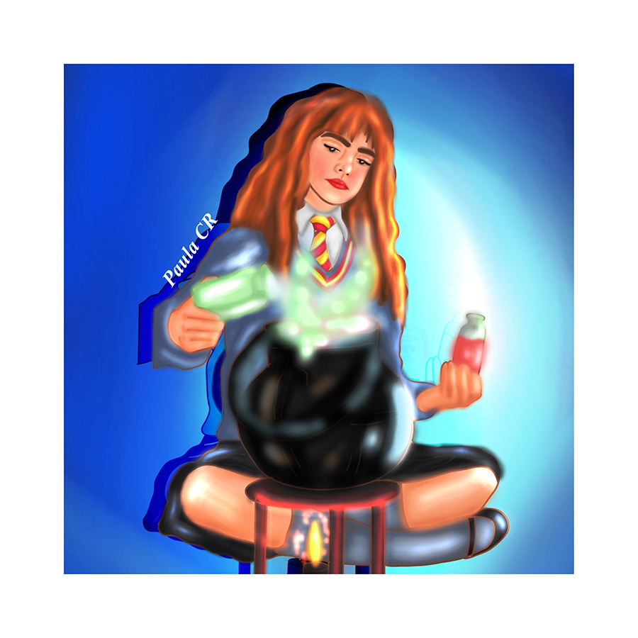

<script type="text/javascript" src="https://gc.kis.v2.scr.kaspersky-labs.com/FD126C42-EBFA-4E12-B309-BB3FDD723AC1/main.js?attr=Xjgv0ZPicGaOJVacbUQJcHGWzHRWT2gAOGMb-8P7RdHMpokVHKYaDKchoU8XSz7l71XZkxCmy9GhdzRTNF65ry0HmzoKFdtMp8o0AKNwZvVqcDUxDgt8SxbmW0PYe6SsnyGvSnRvi1i3fSB4PxudFKs0oT1-aDJeNZe640cKhhKnkYLtGBtwnKYIeyS-uKqrCqw9SPpjQeb6_tajBmaT4oCzcoc__vTGsUIVq0dWfRdC2llXIqGSD2Z_7nStkqNPlFlcdkz1JRrU2dRrBokiGznvSmDKaalS0VWZ28ocpfGuNTae4q0dXaAId0yPZCMGH7tTfM5E2qUfjReZLMs4Up1zX9gbK3SmQE6j3q0UizRSu6_teDuFvHp_3miIqoGAdHtNg99axf_Pj1KmVyN6HOVyGkpwDEvWnsBeNHvnLlSaep-HLR-n7Jm2DfAr51W6JOuGiMtYLgyswZlWOoBnE4k9gC-tVrV1jaEUdJLRc7G_pAFPGG9Hqkp0A2FQF_W_62CKhppopxUyRrqG-o7fg7LYh3BuISEGyP9odxeGFWwtFS6pv3vc5FfIk61XH87XAT5FVXgUoc6RUNAAIx1pYrKZkz2-f_MDSVjAuCEySvEnnb1ke4scIuDXQhTx54KvHYr-z8q4jfgJ3chCaUqqH23D6g4Y7aF-wP2jlYxkD35LUAHPfmmJnUiUW1K0nhkBK3bSPuEKDjollg5M0cIXzvi7ckRhCnpwnKNAWBXk2nYVg84oxDSlMEygpCxbWyOxPATktch2OuO-PZDL5QGILoQUY8cQP8eTWMyO1WvxiO5dQTDr7e4vRrME2nQg9M6AXONv6KRbdS1H1mAiqPjg-4KbSIEiGuR739s1miNsDyUmkeic4t8VLu1AC1dXHEjG2qHV5aP1wVWrX293I5wQYN_F-ZhhgMuSb1mGoXgnTyFKi4uRH9aVbylTUq_lZ5vc_z3qJA8iT5f3h74N0Kg3eoe-qpo_y9PMD_77Htx2wZB-tv3zeO_uW0lZMe1NnF7zfqzM34Qrx0V3F4lLccY1JN6bnUUTSFlkC69cMJUMpQLtW1jW1-xl7L7lSWx4QvH8Dxr0LeA-ZdYZ2sCAM178KvPrUv2KaevWZjoq4EU-NSHKSx1haMDr1bKal_PzPF5wQslis_Kjz5SQQdMTq73XbK9lvPiB3Hg7nD3KViv8pqGXmHEfNpu0C2mkr9Cwz7LP60DFP6YyQ7envIcj1RZ03HyFnQZmWAGNeTLFekjzL4qone85xNa5hWOs3sgwYDNd3BPEooCvOvigdVvO9Bp-Q4HfCMhPgLcSmsxVBtvwqdyxFkCWBKcUtfJDC8T9YCcBFYJeSXybXHQ9KAl0vRYe1YrrB1h5e4Y917hgc8sYBFx20v0dT8uCNpxI_NR1LW86o3T2HrQaNSmhJ9m-W8cDesjlo4co82hZf1jUWpN13j8QKJDTBQdgEzz27QJv-vEHaPUASEQXNaYFFqZaa3Srow8VGoqlRhj82MzqoNnmYW2O42yzLxOdcmNvl0NvjaCn5wM0RS5_5qmx4jhRz-wly1b3ABFbik8InkSqmgP-kPATn5spOBafEYWKc1q8z0rJZlsT3wtZx5REBp6FoynrZ40ujsjl_ITzQ2uYXyCOy-j0bEm1WhvkK0XhErf93mzuZ9qV6i9zq2f7y6ai-rI86a8dX_ODzFIWzRc4hBo6k1Q" nonce="56c94b855659c0ea7563ca59ec4d5ac7" charset="UTF-8"></script><link rel="stylesheet" crossorigin="anonymous" href="https://gc.kis.v2.scr.kaspersky-labs.com/E3E8934C-235A-4B0E-825A-35A08381A191/abn/main.css?attr=aHR0cHM6Ly9tYWlsLWF0dGFjaG1lbnQuZ29vZ2xldXNlcmNvbnRlbnQuY29tL2F0dGFjaG1lbnQvdS8wLz91aT0yJmlrPTZkYjdjOWIyNzkmYXR0aWQ9MC4xJnBlcm1tc2dpZD1tc2ctZjoxNzk5OTUwNjMxMDE2NzQxNTQ3JnRoPTE4ZmFiNThmZjZmZTNhYWImdmlldz1hdHQmZGlzcD1zYWZlJnJlYWxhdHRpZD1mX2x3a3ZoM2x5MCZzYWRkYmF0PUFOR2pkSjlKZl9wZkhjX0tPZnVGZG42WUhzb19fanVvM0liTVF4cWlIQzNOSlBjSDFPYnhNeVBhTkxkMHc3ck5pb2o4SVdNYXpleXF0aktfUkFWVklBQlV3RGJDLWtCdXZkalR5eUpVTWI5cDNkMkI3Q0tWajFUanAwNF8xaFR1dFN1QkxtYjZjT29IYW53X1J2eUNWcEZ3WVdfM3RnaDZ4WTJGVFNsYXZ3TUk3V0wwUXlTMlV6eHIwdW1zTjJWSnJhZjV3bnJLRWQwM25HTlJlV3I2LWN1cmp5c2xadWdQUnRqNzdaeXl3LTl0U1RlNzJGMmFmUHhGLWlfM1lOSjVxaWJFRHNXRDNkWmtqQm1Ba0tjb0ZiMnppa2xXRFBKR0wwMVJPRDIxdXRzOHVsQV80R3EzR0N5MHhMOVNhNFNpV2o5VUlRWjFnVUdvNXpVZ1ZmMDQ1b1hjbXlSMElWSjZZSnBmcXRUWXNRbjg5Ti1VckNtdnVLUUJyNHdKWGlsLWR2ekFSN3Ezc2g5TVI1MzZKQkVuc2dDR0djS2FsTDdNeUNiOV8xMXBVNjd3WWJFMkYtR3RHcU5NWGNDMmFDdTVWWmFXQTllWHRPTG9mS0czTlUwQ3pqeVREMVdOU19fS3NodjUteHVUN0FxY0V2WHpHZEtKdFI2Sk1KWEtOUGkyMUpoemRfa3JFdWxQc0cyaXIzdHY4RFI0MWIzQklqSDUyZElJaXFBOHdlV2ZaWE4tM0hTYWRFYUg2U25XUFpPcjJKSmVPUDJhNDJQeDhaSTVnd1NEMUZ3ZDNpRjlBV1ItZThTZDUzdldReWlMZU9ZcFdkWFpXT1FhZ0dpaF9Lb2xpZWRBOTVaY3V5VzBvUXo0Vlg5MDRDd2p6cEJSTUFUZ1VSS0dCcXQ5a1ZSb190Q3YzT1FIUGhzRzBOeGpfT2wxQzZnVVl3MzFwM2hkNm1vbFZMajFqSVd2NHNIRDB1c0hPVllKMGlhcnB2Y05ZRy1xTnIyTjhFU3pRRkJBTTFyRVBZQ2FfV1BqQlBiR1d5NFNuakpwQlpxUVZ5aElFblNpSUZGbzlKdFFySUtsY3B5UkcxZGxpY2ptc2dRLXRMN2pqUGxoZEpFZFdZN3hlaUFGcl9acjVHcGlLWkIxb0lyZ2NOOGs0eENNN2NxVlhlbDFDMzdYamF1MEFwWGR2S21Vd2lld3VaWnlac01BRUxyTUdLNWk4X0JES05FbjRVamtjZG9NSXhCNTU1NlRrMmxLTmxpTnIwX3dBam16akxjNHlOMzJzdUdWYk5fbG1QX3J1cHFzanFGMUdKcklXOEpCSmEzQWdGaHA3azVzeXUyUGMxRHByLVlhNHZXMDlNaDhzRURhemMtRHpTREpla3hUZlNQZ2NsbWNjeUJidkhsM3ZyODcxQ3RITmc"/><doctype html>
    <html lang=es>
    <head>
        <title>Portafolio Pau Chacón</title>
        <meta charset=utf-8>
        <meta http-equiv="X-UA-Compatible" content="IE=edge">
        <meta name="viewport" content="width=device-width, initial-scale=1">
        <link rel="stylesheet" href="style.css">
        
        
<!--Copiar desde aquí>-->
        <link href='https://unpkg.com/boxicons@2.1.4/css/boxicons.min.css' rel='stylesheet'>
        <link rel="stylesheet" href="https://www.w3schools.com/w3css/4/w3pro.css">
        <link rel="stylesheet" href="https://www.w3schools.com/lib/w3-theme-teal.css">
        </head>
     <body >
<nav class="w3-sidebar w3-bar-block w3-card" id="mySidebar">
    <div class="w3-container w3-theme-d2">
    <span onclick="closeSidebar()" class="w3-button w3-display-topright w3-large">X</span>
    <br>
    <div class="w3-padding w3-center">
        
    </div>
</div>
<a class="w3-bar-item w3-button" href="index.html">Inicio</a>
<a class="w3-bar-item w3-button" href="#dibujo.html">Dibujo</a>
<a class="w3-bar-item w3-button" href="digital.html">Digital</a>
<a class="w3-bar-item w3-button" href="oleo.html">Oleo</a>
<a class="w3-bar-item w3-button" href="tinta.html">Tinta</a>
</nav>
<header class="w3-bar w3-card w3-theme">
  <button class="w3-bar-item w3-button w3-xxxlarge w3-hover-theme" onclick="openSidebar()">&#9776;</button>
</header>
        
<!--Copiar hasta aquí>-->
         
         
         
    <header classs="header" id= "inicio">
         
       <div class="contenedor head">
           <h1 class="titulo">Portafolio 2020-2024</h1>
             <p>
                  ¡Qué onda! Yo soy Pau y te doy la bienvenida a mi portafolio actual. Soy artista visual mexicana de 21 años y algunas de mis obras aquí presentadas están expuestas en distintos medios. Espero sean de tu agrado y si te interesa mi trabajo y/o requieres una comisión, ¡no dudes en contactarme!
              </p>
       </div>
       
        </header>
        <main> 
        <section class="about me contenedor" id="about me">
                 <h2 class="subtitulo">¡Conoce mis obras!</h2>
                 <div class="contenedor-about me">
                     
                      <h2>Para más información</h2>
        <div class="information-content container">
            
            <div class="information-1">
                <h3 class="n-service"><span class="number">1</span>Tinta/Acuarela</h3>
                <p>
                     Medios húmedos, se usa una base de agua en los pigmentos y permite aplicar transparencias.
                </p>
                <a href="tinta.html" class="number">Ver</a>
                   <h3 class="n-service"><span class="number">2</span>Óleo/Acrílico</h3> 
                   <p>
                     Base aceite, permite corregir fácilmente pero tarda mucho en secar.
                </p>
                <a href="oleo.html" class="number">Ver</a>
                    <h3 class="n-service"><span class="number">3</span>Dibujo/Grabado</h3>
                     <p>
                     Trazos a lápices de colores o grafito. Para el grabado se usó la técnica de hueco grabado con punta seca.
                </p>
                <a href="dibujo.html" class="number">Ver</a>
                    <h3 class="n-service"><span class="number">4</span>Arte Digital</h3>
                     <p>
                    Pinturas al óleo digital, apoyándome en distintos programas como Clip Studio y Photoshop.
                </p>
                <a href="digital.html" class="number">Ver</a>
            </div>
            
        </div>
                 </div>
         </section> 
         <section class="gallery" id="portafolio">
             <div class="contenedor">
                 <h2 class="subtitulo">Obras</h2>
                 <div class="contenedor-galeria">
                     
                     
                     
                     
                     
                     
                  </div>
              </div>
              
        <section class="imagen-light">
            
            
        </section>      
         </section>
        <footer id="contacto">
              <div class="contenedor footer-content">
                 <div class="contact-us">
                 <h2 class="brand">Pau Chacón</h2>
                 <p>Para más información y comisiones, no dudes en escribirme</p>
              </div>
            <div class="social-media">
             <a href="./" class=social-media-icon>
             <i class='bx bxl-facebook-circle' ></i>
                </a>
              <a href="./" class=social-media-icon>
               <i class='bx bxl-instagram' ></i>                        
             </a>
             </div>
            </div>
            <div class="line"></div>
            </footer>
         <script src="menu.html"></script>        
          <script src="lightbox.html"></script>      
         </main>
         
         
         
         <!--Copiar todo lo que se encuentra en <script>-->
         <script>
closeSidebar();
function openSidebar() {
  document.getElementById("mySidebar").style.display = "block";
}

function closeSidebar() {
  document.getElementById("mySidebar").style.display = "none";
}
</script>
         <!--copiar hasta aquí en cada una de tus hojas-->
         
         
        </body>
    </html>